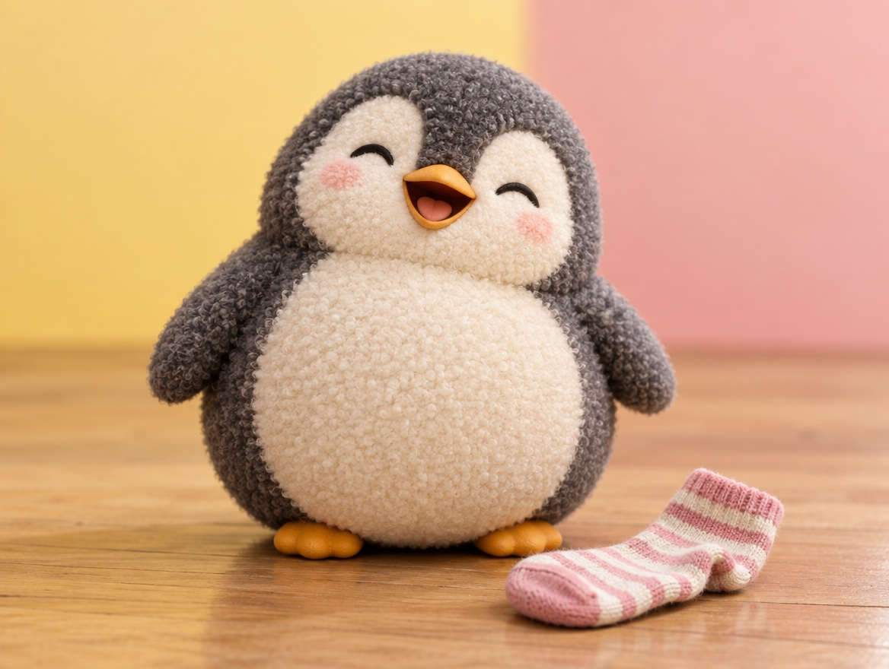

🧪 LAB · 試作 — AIが読書メモから一気に作った記事です。本番の一覧には出していません · 試作の一覧
🐧 EVERYDAY LIFE⚡ 43 SEC
A little bad but cheerful is better than perfect 🧦

Sound Familiar
Do you try to do everything perfectly and sigh all the time?
People who see your sighs may think, "Being a grown-up looks boring."
The Point
The goal is not a perfect person, but "a person who is a little bad, but cheerful."
The Reason
It is said that the most important thing is to be in a good mood yourself.
This is because the air around a person in a good mood becomes soft just from that.
One Warning
But a forced smile does the opposite.
You get more tired, and people around you can tell you are forcing it.
⚡ TRY IT
The perfect dial
Turn your "perfect level" down, little by little. Where is everyone the happiest?
🎯 Perfect level100%
😌 Relax🔥 Try harder
😊 Your mood
🏠 People around you
😮💨 Everything is perfect… but you are so tired. Sigh.
😐 Still very careful. Little sighs here and there.
😄 A sock on the floor, but you are laughing. Everyone is happy!
🙃 Maybe a little too messy now. But you are still smiling.
😬 A forced smile makes it worse. You get even more tired.
🌟 Found it: "a little bad, but cheerful"!
For Example
For example, even if a sock is on the floor of your room, it is enough if you can laugh.
Being a little bad but cheerful makes everyone more relaxed than being perfect.
📚 I wrote this from my reading notes.